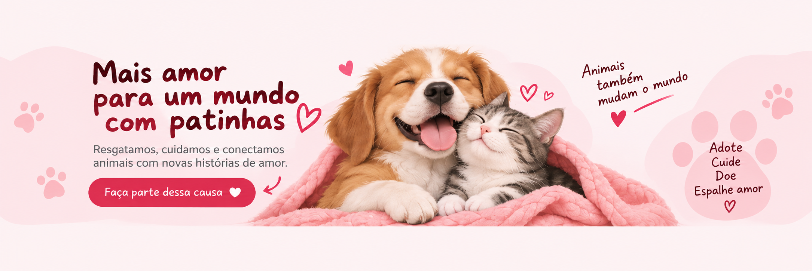
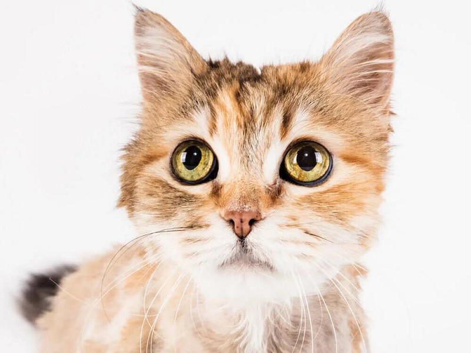
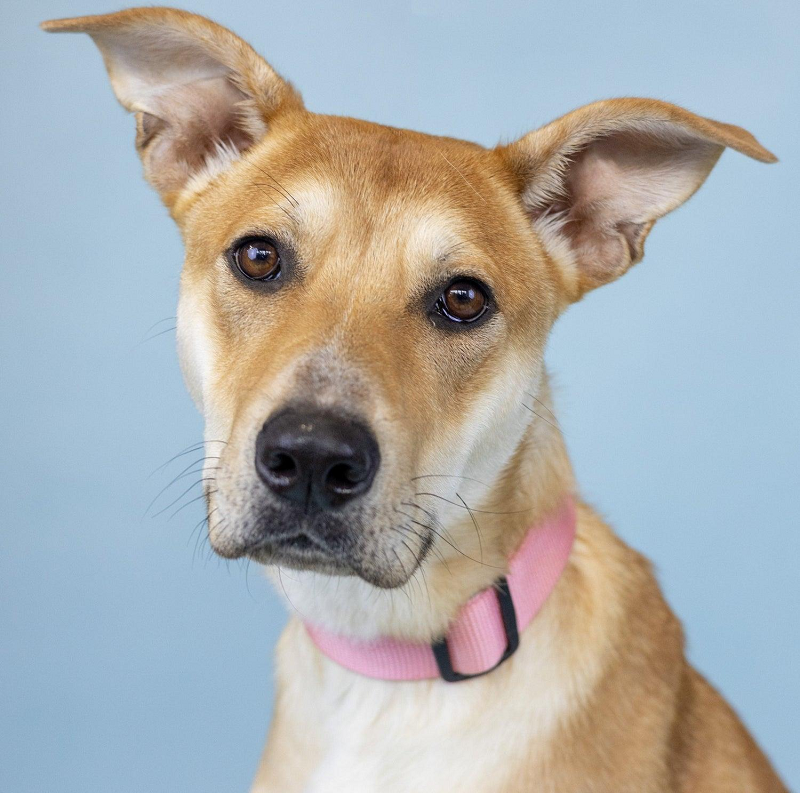
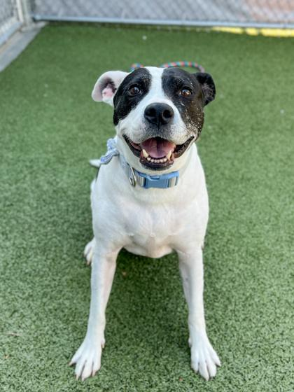
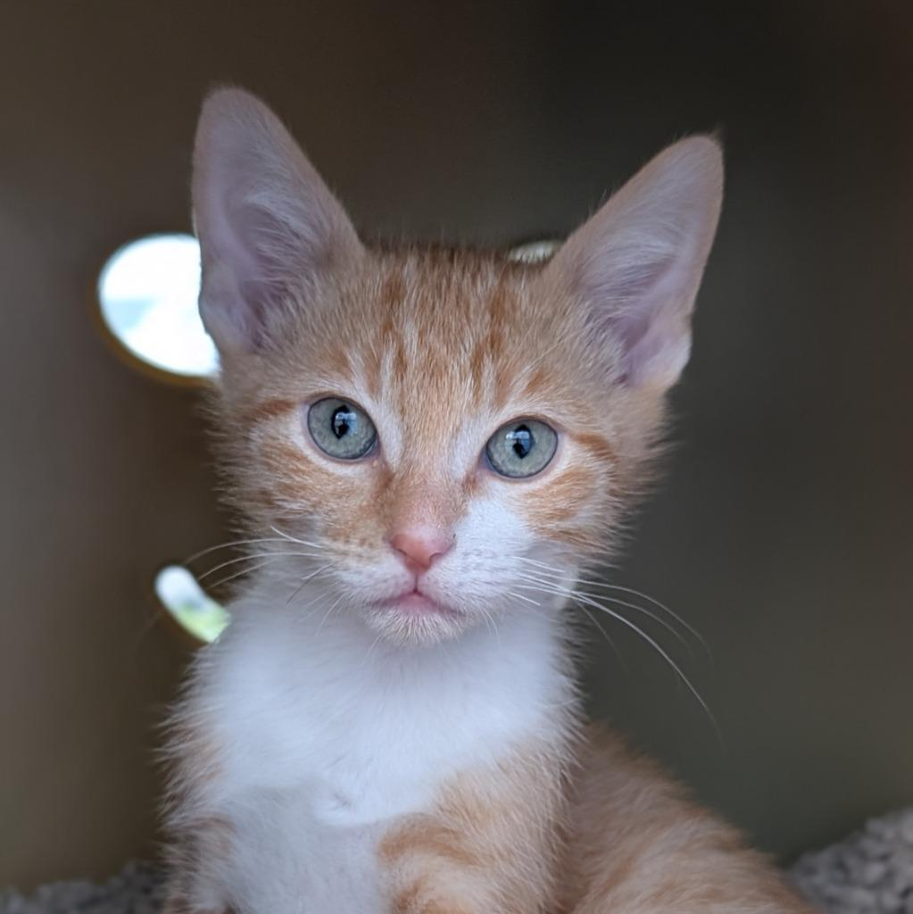

Adote
Dê um lar cheio de amor para um animal que precisa de você.

A Patinhas de Amor é uma organização dedicada ao resgate, cuidado e adoção responsável de animais que precisam de um novo lar.
Nosso objetivo é proporcionar uma vida mais feliz e segura para cada animal, conectando-os a pessoas que possam oferecer amor, cuidado e responsabilidade. A Patinhas de Amor tem como missão resgatar, cuidar e encontrar lares responsáveis para animais que precisam de proteção, oferecendo amor, segurança e uma nova oportunidade de vida. Nossa visão é contribuir para uma sociedade onde todos os animais sejam tratados com respeito, carinho e dignidade. Para isso, valorizamos o amor, a responsabilidade, o respeito e a solidariedade na proteção e no cuidado com os animais.
Você também pode fazer parte dessa história. Existem várias formas de ajudar nossos animais.
Obrigado por ajudar a Patinhas de Amor.
Dê um lar cheio de amor para um animal que precisa de você.
Ajude nos cuidados e nas atividades da nossa organização.
Contribua com ração, medicamentos ou recursos financeiros.
Conheça alguns dos nossos animais que estão esperando por uma família.

Carinhosa, brincalhona e cheia de energia.
Quero conhecer
Calma, carinhosa e adora receber atenção.
Quero conhecer
Brincalhão, companheiro e muito amoroso.
Quero conhecer
Doce, tranquila e esperando uma família.
Quero conhecerSua ajuda pode transformar a vida de um animal. Faça parte da Patinhas de Amor!